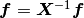

Multi-Cell Monte Carlo (MC)^2¶
I am currently working on pymatmc2 which implements the methodology of Niu, Rao, Windl, and Ghazisaeidi [NRWG19]
(1)¶
In linear algebra form, Equation (1) becomes , so that  determines the molar ratios. This approach preserves the initial stoichiometry.
The probability of acceptance is the same as an isothemal-isobaric ensemble with the acceptane criteria for a move from  to
to
(2)¶
- NRWG19
Changning Niu, You Rao, Wolfgang Windl, and Maryam Ghazisaeidi. Multi-cell monte carlo method for phase prediction. npj Computational Materials, 5(1):1–5, 2019.